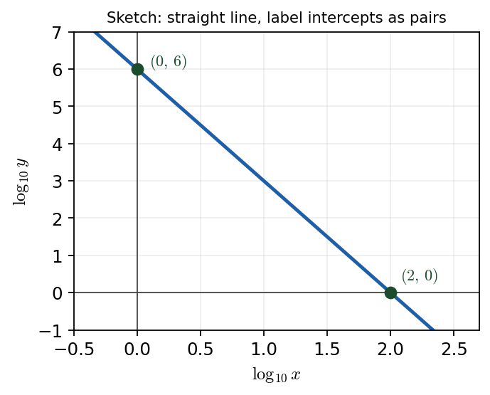

Harry → Phuc • 12 July 2026 tutorial
P3 WMA13/01 — June 2024 — Q3Q3 · Sketch \(\log_{10}y\) against \(\log_{10}x\)

A \(\log\)-\(\log\) linear relationship plots as a straight line; the intercepts are labelled as coordinate pairs \((0,6)\) and \((2,0)\) on the \(\log_{10}y\) vs \(\log_{10}x\) axes.
Status: discussed only (not fully re-worked). Harry reviewed Phuc's sketch (“pretty much fine”) and added two points on notation and ‘sketch vs plot’. No full tutor solution was worked, so none is invented; only the evidenced review and the intercepts \((0,6)\), \((2,0)\) are shown.
Part (a) · Sketch \(\log_{10}y\) vs \(\log_{10}x\)Discussed only
Hide workingWhat was reviewed (not fully re-worked)
Harry reviewed Phuc's existing sketch rather than re-deriving it: he called it
“pretty much fine” and confirmed the graph was otherwise correct. The two teaching points below are what Harry added.
Point 1 · label intercepts as coordinate pairs
Write the axis intercepts as \((x,y)\) pairs — e.g. \((0,6)\) and \((2,0)\) — not as bare numbers on the axes.
Point 2 · ‘sketch’ vs ‘plot’
A
sketch needs correct shape plus key points only; a
plot demands an accurate scale. This question says
sketch, so shape + labelled intercepts suffice.
Note on the working shown
The lesson evidence records the review and the two points above, and the intercepts \((0,6)\), \((2,0)\); it does not record a full tutor re-derivation of the underlying model, so none is reconstructed here.
Common trap (general): a \(\log\)-\(\log\) graph of a power law \(y=ax^{n}\) is a straight line \(\log_{10}y=\log_{10}a+n\log_{10}x\); its intercepts give \(\log_{10}a\) and \(-\tfrac{\log_{10}a}{n}\). Reading intercepts as unlabelled numbers, or drawing a curve instead of a line, loses the marks.